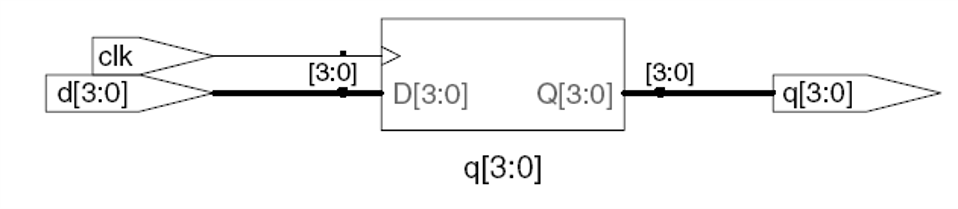
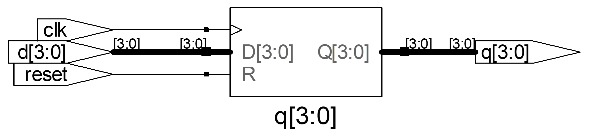
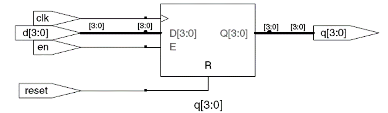
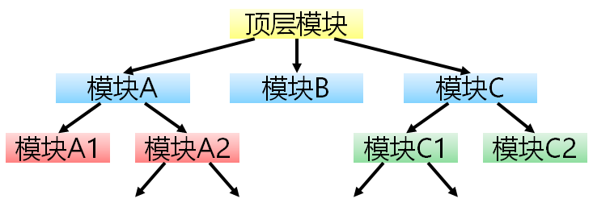

System Verilog 语句
System Verilog 语句¶
1 连续赋值：assign¶
之前的内容已经使用了很多assign的赋值语句，这里不再赘述。
2 过程赋值：always¶
语法:
always @(sensitivity list)
statement;
- sensitivity list ：敏感信号列表
- 当敏感信号列表的信号发生变化时，执行statement
注意
在System verilog中，always语句使用 always_comb 描述组合逻辑，always_ff 描述时序逻辑(寄存器)。
2.1 使用always的组合逻辑¶
if/else 和 case/casez 语句必须在always块中使用。
always statements:
if / else 语句
case, casez 语句
```
* if / else 语句
if-else 语句用于实现带有优先级的条件分支，格式如下：
```verilog
if (条件)
过程语句;
[else
过程语句;
]
这里的 else 分支可以省略，但可能带来额外的问题。我们建议大家不要省略 else。
上次实验的多路选择器代码
module mux2(input logic [3:0] d0, d1,
input logic s,
output logic [3:0] y);
assign y = s ? d1 : d0;
endmodule
我们可以使用下面的代码实现。
module mux_2(input logic [3:0] d0, d1,
input logic s,
output logic [3:0] y);
always_comb begin
if(s == 1)
y = d1 ;
else
y = d0 ;
end
endmodule
- case 语句
case 语句用于具有相同优先级的条件分支。case 和 endcase 两个关键字必须成对出现。与 if-else 语句一样，case 语句出现在 always 的中，而不能在模块内部单独出现。其用法如下：
case（case 表达式）
case 条目表达式 1：过程语句;
case 条目表达式 2：过程语句;
...
[default:过程语句];
endcase
在一个 case 语句中不能有多个 default 语句。过程语句可以是一条语句，也可以是多条。如果是多条语句，则需要用 begin 与 end 关键字进行说明。
default 语句是可选的，同样地，我们建议大家不要省略 default。
case 语句的例子,这里实现一个3-8译码器，
module decode3_8(
input [2:0] in,
output [7:0] out
);
logic [7:0] out;
always_comb begin
case (in)
3'b000: out = 8'b0000_0001;
3'b001: out = 8'b0000_0010;
3'b010: out = 8'b0000_0100;
3'b011: out = 8'b0000_1000;
3'b100: out = 8'b0001_0000;
3'b101: out = 8'b0010_0000;
3'b110: out = 8'b0100_0000;
3'b111: out = 8'b1000_0000;
default: out = 8'b0000_0000;
endcase
end
endmodule
module decode3_8(
input [2:0] in,
output logic [7:0] out
);
always_comb begin
out = 8'b0000_0000;
out[in] = 1'b1;
end
endmodule
提示
你可能注意到这里有两个问题。
-
端口定义的out 前面加了logic， 在verilog中 端口定义的 input， output 默认信号都是wire连线类型了，而在always块中描述的逻辑必须是reg类型，不能是wire。虽然system verilog 统一使用了logic取代wire和reg， 但端口默认是wire类型，因此这里的out信号就需要由wire类型改成logic类型。
-
第二种写法的out 被赋值了2次，这种写法跟阻塞赋值有关，我们可以认为{out = 8'b0000_0000;} 先执行，{out[in] = 1'b1;} 后执行。
2.2 阻塞赋值和非阻塞赋值¶
代码赋值操作有两种：
-
= ： 阻塞赋值
阻塞赋值是顺序执行的，即下一条语句执行前，当前语句一定会执行完毕。这与 C 语言的赋值思想是一致的。阻塞赋值语句使用等号 = 作为赋值符
-
<= ： 非阻塞赋值
非阻塞赋值属于并行执行语句，即下一条语句的执行和当前语句的执行是同时进行的，它不会阻塞位于同一个语句块中后面语句的执行。非阻塞赋值语句使用小于等于号 <= 作为赋值符。
注意
在实际的 Verilog 代码设计时，不要在一个过程结构中混合使用阻塞赋值与非阻塞赋值。两种赋值方式混用时，时序不容易控制，很容易得到意外的结果。
信号赋值规则
同步顺序逻辑 : 使用 always_ff @(posedge clk)和非阻塞赋值 (<=)
always_ff @(posedge clk)
q <= d; // nonblocking
简单组合逻辑: 使用持续赋值(assign…)
assign y = a & b;
更复杂的组合逻辑: 使用 always_comb 和阻塞赋值(=)
2.3 时序逻辑¶
这里以触发器的实现为例：
- D触发器的实现
module flop(
input logic clk,
input logic [3:0] d,
input logic [3:0] q
);
always_ff @( posedge clk )
q <= d;
endmodule
这里 posedge 对应上升沿，negedge 对应下降沿。上面的代码采用上升沿，仅在 clk 从低电平（0）变为高电平（1）时触发。
综合后的图示

上升沿与下降沿
数字电路中，我们把电平从低电平（0）变为高电平（1）的一瞬间（时刻）称为上升沿；从高电平（1）变为低电平（0）的一瞬间（时刻）称为下降沿。
- 同步复位D触发器
module flopr(input logic clk,
input logic reset,
input logic [3:0] d,
output logic [3:0] q);
// synchronous reset
always_ff @(posedge clk)
if (reset) q <= 4'b0;
else q <= d;
endmodule

- 异步复位D触发器
module flopr(input logic clk,
input logic reset,
input logic [3:0] d,
output logic [3:0] q);
// asynchronous reset
always_ff @(posedge clk, posedge reset)
if (reset) q <= 4'b0;
else q <= d;
endmodule
- 带使能的D触发器
module flopren(input logic clk,
input logic reset,
input logic en,
input logic [3:0] d,
output logic [3:0] q);
// asynchronous reset
always_ff @(posedge clk, posedge reset)
if (reset) q <= 4'b0;
else if (en) q <= d;
endmodule

3 模块例化¶
我们在设计中往往有多个模块，通常的设计是一个顶层的模块，里面有很多的小模块构成，小模块还可以有更小的模块组成。通过模块例化我们可以实现这种层次化设计。

模块例化是指在一个模块中引用另一个模块，对其端口进行相关连接的过程。例化的基本形式为：
<模块名> <例化标识符> (端口连接);
模块与函数
你可以简单地认为：模块例化就是在电路中放入了一个具有特定功能的集成电路。
模块声明可以对标函数的声明，模块例化可以对标函数的调用。
与C语言函数调用不同，在C代码中调用8次加法函数，是这个函数执行8次。
硬件描述语言中例化8次加法器模块，是在电路中加入了8个加法器单元。
这8个单元是独立的，是同步执行的。
例化过程中信号列表用于描述父模块与子模块之间端口信号的关联方式，实现子模块与父模块、子模块间的通信。通常有位置关联法和名称关联法。
-
位置关联法：实例化子模块时，按照子模块定义时端口出现的顺序建立端口的连接关系,排列顺序不能改变，如下所示。
(信号1, 信号2, …, 信号n)
module adder_8 (
input [7:0] a, b,
input cin,
output reg [7:0] s,
output cout
);
assign {cout,s} = a + b + cin;
endmodule
位置映射法示例：
module adder_32 (
input [32:0] a, b,
input cin,
output [32:0] s,
output cout
);
logic [2:0] c_temp;
adder_8 adder_8_1(a[7:0], b[7:0], cin, s[7:0], c_temp[0]);
adder_8 adder_8_2(a[15:8], b[15:8], c_temp[0], s[15:8], c_temp[1]);
adder_8 adder_8_3(a[23:16], b[23:16], c_temp[1], s[23:16], c_temp[2]);
adder_8 adder_8_4(a[31:24], b[31:24], c_temp[2], s[31:24], cout);
endmodule
结构图图示

-
名称关联法：实例化子模块时，直接通过名称建立子模块端口的连接关系，不考虑其排列顺序，如下所示。
(.端口1(信号1), .端口2(信号2), …, .端口n(信号n))
上面例子改用名称映射法的写法：
module adder_32 (
input logic [31:0] a,
input logic [31:0] b,
input logic cin,
output logic [31:0] s,
output logic cout
);
logic [2:0] c_temp;
adder_8 adder_8_1 (
.a(a[7:0]),
.b(b[7:0]),
.cin(cin),
.s(s[7:0]),
.cout(c_temp[0])
);
adder_8 adder_8_2 (
.a(a[15:8]),
.b(b[15:8]),
.cin(c_temp[0]),
.s(s[15:8]),
.cout(c_temp[1])
);
adder_8 adder_8_3 (
.a(a[23:16]),
.b(b[23:16]),
.cin(c_temp[1]),
.s(s[23:16]),
.cout(c_temp[2])
);
adder_8 adder_8_4 (
.a(a[31:24]),
.b(b[31:24]),
.cin(c_temp[2]),
.s(s[31:24]),
.cout(cout)
);
endmodule
提示
在我们的设计中推荐使用"名称关联法"
4 参数化设计¶
在模块声明时使用 parameter 关键字指定参数，这样在例化时根据需要确定参数值，将新的参数值写入模块例化语句，以此来改写子模块的参数值。
上面例子的8位加法器使用参数化设计可以示例如下：
module adder_n # (parameter WIDTH = 8)
(
input [WIDTH-1:0] a, b,
input cin,
output reg [WIDTH-1:0] s,
output cout
);
assign {cout,s} = a + b + cin;
endmodule
这里的位宽WIDTH就是参数化设计的，默认值为8，如果我们需要32位的加法器，例化代码就可以如下表示：
module adder_32 (
input logic [31:0] a,
input logic [31:0] b,
input logic cin,
output logic [31:0] s,
output logic cout
);
adder_n #(32) adder_32 (
.a(a),
.b(b),
.cin(cin),
.s(s),
.cout(cout)
);
endmodule